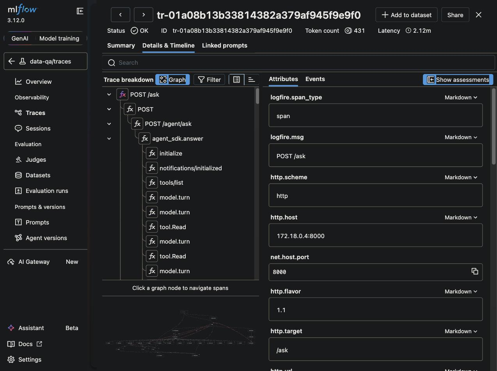
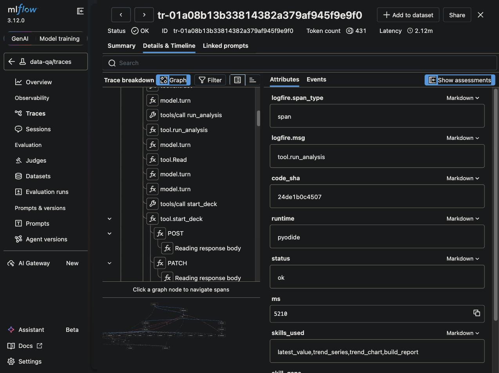
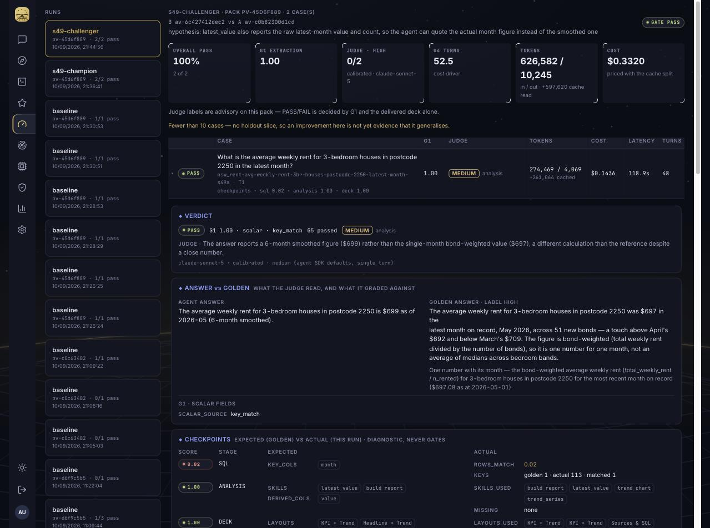
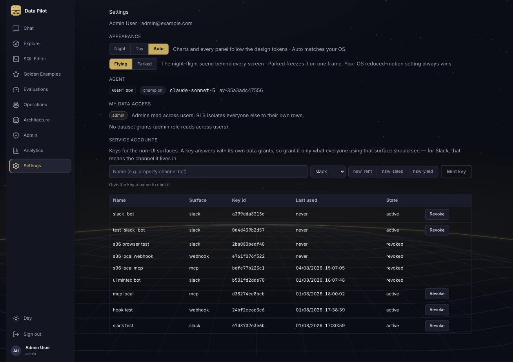
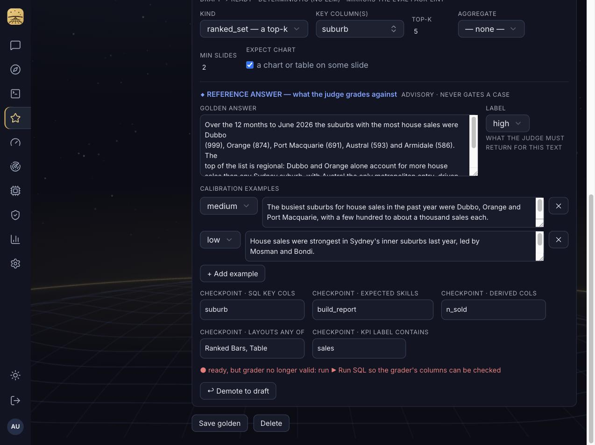
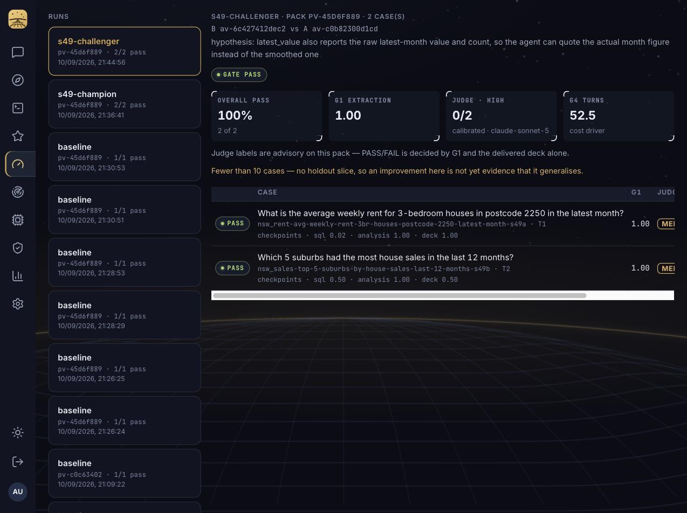
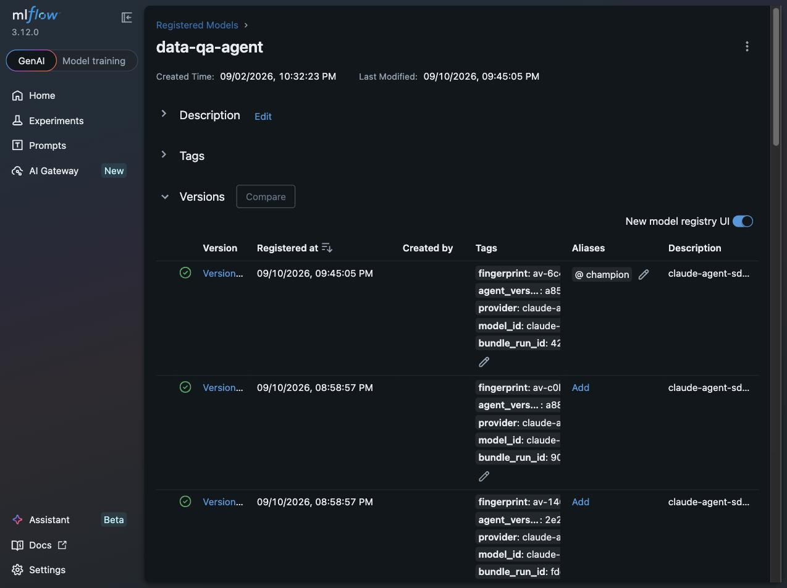
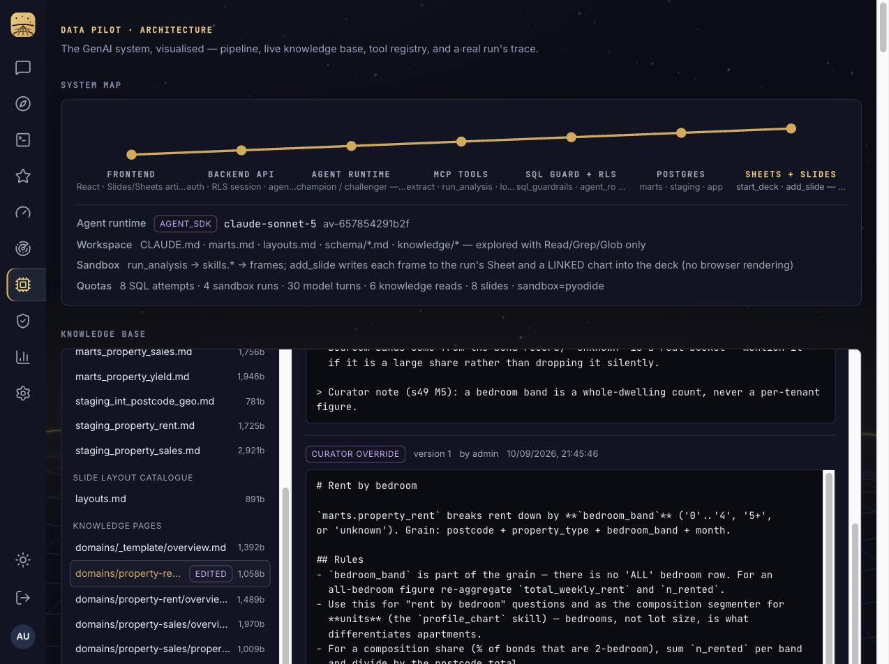

eval-loop-reviewEverything the s49 plan asked for is on the branch: per-action tracing into MLflow, goldens with a reference answer and hidden checkpoints, a calibrated sonnet-5 label judge, skills in the fingerprint with a bundle per registered version and a one-command rewind, a curator write path for knowledge, and an offline optimiser that only ever opens draft PRs. This page walks you through the M5 acceptance run on two made-up goldens, with screenshots and the exact places to look in the app and in MLflow.
The loop is fully tracked, judged against goldens, versioned and rewindable, and champion vs challenger promotion works on two goldens. The optimiser first declined to open a PR because its candidate failed the golden checkpoint test, then, once the checkpoint was corrected, opened draft PR #42 with a tested period_metric helper. Both behaviours are the D4 guarantee working.
s49-m5 goldensScroll to REFERENCE ANSWER: golden answer, label, calibration examples, and the five checkpoint fields. These are what the judge is calibrated on and what checkpoints diagnose against. The agent never sees any of it.
s49-challengerHeader shows B vs A fingerprints, the hypothesis, and GATE PASS. Per case: PASS on G1 + G5, the judge label with its stage diagnosis, and the checkpoint scores (sql / analysis / deck). The yellow line reminds you the judge is advisory below 10 goldens.
Trace ids are on every eval row now (eval_results.otel_trace_id). Open one: POST /ask → agent_sdk.answer → model.turn, tool.Read, tool.extract, tool.run_analysis, tool.start_deck, tool.add_slide. Click tool.run_analysis for code sha, runtime, ms, skills used, stdout length.
v19 carries @champion and a bundle_run_id tag; that run holds bundle.json and bundle.tar.gz. make agent-checkout FP=av-c0b82300d1cd rewinds to v18's prompts, skills and knowledge.
domains/property-rent/bedrooms.mdShows the EDITED badge and the CURATOR OVERRIDE panel (version 1, by admin). The edit changed the live fingerprint and was exported back to git with make knowledge-export.
make skill-mine RUN=… / make reflect RUN=…Section 7 has the output. The miner's candidate is the right idea and the gate did its job.

agent_sdk.answer with a child span for every model turn and tool call. Before s49 this was a single span.
code_sha, runtime=pyodide, status=ok, ms=5210, the skills the code called. The stored trace step also carries the captured stdout and the derived frame heads.| What | Where to see it | Verified |
|---|---|---|
| Per-action spans | MLflow data-qa/traces, any run since the branch | 71 child spans on one chat run: model.turn ×45, tool.Read ×11, tool.Glob ×4, tool.extract ×3, tool.Grep ×2, tool.run_analysis ×2, tool.add_slide ×2, tool.lookup_values, tool.start_deck |
| Sandbox stdout + frames | query_runs.trace analysis step → passes[] | captured on both executors (subprocess and pyodide), 8 KB cap |
| Deck as specified | query_runs.artifact_manifest; Evaluations tab per case | every add_slide's layout, headline, kpi, chart type, rows |
| Eval → trace join | eval_results.otel_trace_id, mlflow_run_id | populated on all 10 M5 rows |
| Grading as a span | eval.grade span with run_id, trace id, case key | seen in data-agent logs during every eval |

Two layout bugs surfaced and were fixed while building it: the case column overflowed the panel because of a global no-wrap rule on table cells, and the Evaluations page never scrolled.

remember tool and prompt slot are removed, which moved the fingerprint to av-35a3adc47556). The stale Model provider block is replaced by the live runtime, champion status, model and fingerprint. The app.user_memories table is left in place for now.
10 of 10 probes agreed: every golden's answer came back high, every calibration example came back with its stored label. Model claude-sonnet-5, rubric label-v1 (hash jr-227c9a32). A judge that fails this does not score the run.
Rent golden: medium / analysis on 5 of 6 runs. G1 passes because the smoothed latest_value is within 1% of the raw month, but the judge notices the answer never quotes the actual May 2026 figure. That is a real, actionable diagnosis and it points at exactly the helper the challenger changed. Sales golden: high / none on the champion, medium / presentation on the challenger.
| Run | Rent golden | Sales golden | Checkpoints (rent · sales) |
|---|---|---|---|
| Baseline ×3 | PASS · medium/analysis, medium/analysis, medium/presentation | PASS · high/none ×3 | analysis 1.0 deck 1.0 · analysis 1.0 deck 0.5 |
| Champion (v18) | PASS · medium/analysis · 43 turns | PASS · high/none · 85 turns | sql 0.02 analysis 1.0 deck 1.0 · sql 0.50 analysis 1.0 deck 0.5 |
| Challenger (v19) | PASS · medium/analysis · 48 turns | PASS · medium/presentation · 57 turns | same |
The sql checkpoint on the rent golden is low because the agent extracts a multi-month series and the golden extracts one month; both are correct, the checkpoint is diagnostic only and says "the SQL shapes differ", which is true.

av-6c427412dec2 vs A av-c0b82300d1cd, the hypothesis, GATE PASS, 2 of 2, judge 0/2 high (advisory), and per-case checkpoints.One edit to skills/analysis.py: latest_value now also returns raw_value and count. Rebuild → fingerprint av-c0b8… → av-6c42… with only skills_hash changed (s-ba375b69 → s-fb4bcebb). Before s49 this edit would not have changed the version at all.
rule: pass_rate >= champion AND no pass->fail flips
champion v18 eval 5b20ddf0 pass_rate 1.0
challenger v19 eval 360d1124 pass_rate 1.0
flips: [] promoted: true
PROMOTED — @champion moved v18 -> v19; recorded in app.promotionsBug found and fixed on the way. mlflow_client.delete_alias sent the alias as query parameters; MLflow 3.x rejects that and the client swallowed the error, so @challenger survived every previous promote. It now sends a JSON body, and the alias is gone after this promotion.

@champion; its tags carry the fingerprint, agent_version id and bundle_run_id. The bundle run holds bundle.json (component hashes, git sha, DB snapshot hashes) and bundle.tar.gz (prompts, skills, knowledge).make agent-checkout FP=av-c0b82300d1cd
# worktree at the recorded git sha
# skills/analysis.py == pre-challenger file (byte-identical)
# prints compose override + DB drift-check SQLprovider | model | claude_md | marts | schema | knowledge_version | ordinals | quota | skills. The generated skills block in CLAUDE.md means a helper signature change also moves claude_md, so the prompt the agent saw is always the one recorded.

av-6c42… → av-6578….Writes go through backend-api (the only service holding the app role), with an append-only log. make knowledge-export wrote the page back to services/data-agent/knowledge/ and that file is committed on the branch, so git remains the source of truth. The markdown filesystem, its 3-tier index/search/read and the read quota are unchanged, per D3.
make skill-mine RUN=5b20ddf0Cluster found: the rent golden's analysis diagnosis. Opus proposed period_metric(df, period_col, value_col, den_col, group_col, period=None, min_count): a ratio-of-sums for one period, the primitive that was missing. Hypothesis, in its words: "every existing analysis skill answers a trend question … there was no skill that says give me sum(total_weekly_rent)/sum(n_rented) for one month".
The candidate ran clean in the real sandbox against the golden's rows but failed the gate: the golden's derived_cols named avg_weekly_rent, which is the extract column, so no derived frame could contain it. Status candidate-failed, no branch, no PR. With the golden checkpoint corrected (derived_cols: [value]) the rerun candidate passed (ok: true, frame latest_rent carries value) and the miner opened draft PR #42 on branch optimise/skill-period-metric-skill: the helper plus tests/test_skill_period_metric.py. Human merges, per D4.
make reflect RUN=5b20ddf0Returned no-failures: the run had no failed or low-labelled case, and a medium label is not enough to justify a prompt or knowledge edit. Correct by design; the reflector only proposes when there is evidence.
Reading the medium labels. The judge is telling you the same thing the miner found: the agent quotes the smoothed figure. The fix is a knowledge or CLAUDE.md line telling it to use raw_value for point-in-time questions, or the period_metric helper. Both are one optimiser cycle away once the pack has a failing case to anchor on.
| Area | Change |
|---|---|
| Tracing (M0) | child spans per model turn and tool call; sandbox stdout + frames in the trace on both executors; artifact_manifest; trace + MLflow ids on eval rows; eval.grade span |
| Versioning (M1) | skills_hash in the fingerprint; bundle.json + tarball per registered version; make agent-checkout; generated skills block in CLAUDE.md |
| Goldens + judge (M2) | golden v2 in pack, DB and Golden tab; checkpoint scoring; sonnet-5 label judge with calibration; insight judge removed; pass = G1 + G5; G5 persisted |
| Optimiser (M3) | skill_miner.py, reflect.py, shared harness; candidate tested in the real sandbox; draft PRs only |
| Knowledge (M4) | app.knowledge_pages + log; admin PUT; Architecture tab editor; make knowledge-export/import |
| Acceptance (M5) | two made-up goldens (tag s49-m5), --tag filter, challenger helper, alias fix, run log in docs/eval-loop-s49.md |
| Migration | 0039: query_runs.artifact_manifest; eval_results otel_trace_id, mlflow_run_id, judge, checkpoints, g5; eval_cases golden_answer, label, calibration_examples, checkpoints; knowledge_pages + log |
period_metric to the skills library with a test. Merging it would mint another challenger.